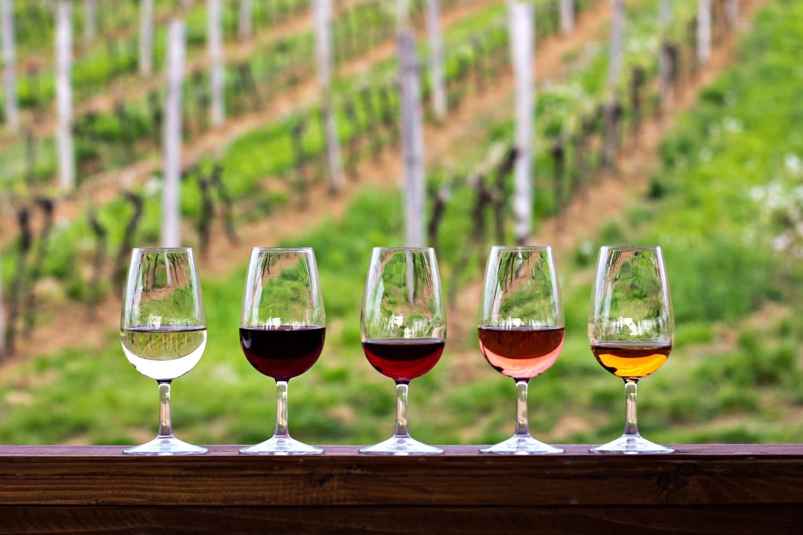
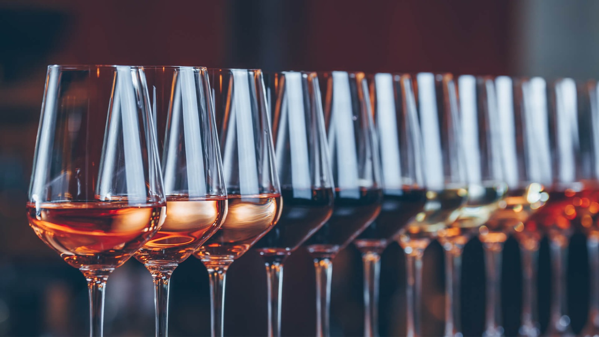

| HOME |
A Vinheria Agnello é uma empresa familiar que iniciou suas atividades em São Paulo há mais de 15 anos, contando com apenas uma loja física onde coloca à disposição do mercado uma vasta gama de rótulos de vinícolas nacionais e internacionais. Tanto os proprietários quanto seus vendedores são profundos conhece- dores do mundo dos vinhos, e usam esse conhecimento no atendimento dos clientes, que sempre demandam informações, recomendações e dicas. Essa troca de conhecimento, com cara de consultoria, é um dos pontos fortes da vinheria.
O MUNDO DOS VINHOS O mundo dos vinhos é bastante vasto e diverso, o que torna bastante difícil a tomada de decisão na hora da compra e da forma de consumo para a maioria do público consumidor. São cerca de 6.000 variedades de uvas viníferas no mundo, que adquirem carac- terísticas e sabores diferentes de acordo com a região, o clima, o solo e os cuidados em seu cultivo, sem contar com as diferentes técnicas de colheita, fermentação, processamento e armazenagem, que levam à produção de uma infinidade de vinhos capazes de atender aos paladares mais diversos. E tudo isso pode mudar a cada safra, cada ano de produção. É impossível, portanto, que alguém possa conhecer ou experimentar todos os vinhos disponíveis no mercado, mas combinando estudo, leituras, visitações, trocas de informações e degustação frequente é possível maximizar as chances de escolha de um vinho que agrade seu paladar, ou ao menos minimizar as chances de cometer grandes erros na seleção de um vinho. O resto fica por conta da experimentação, da ocasião do consumo, da boa companhia. ARMAZENAGEM CONTROLADA Uma das particularidades relevantes dos vinhos é o risco de sua degradação, ou ao menos alteração de suas características de coloração, aromas e sabor, caso sejam mal armazenados, expostos por muito tempo à luz natural, temperaturas altas, ou mesmo quando expostos a vibrações ou movimentações constantes. Conhecedora desses riscos, a Vinheria Agnello adota cuidados especiais na armazenagem de seus vinhos, em especial com os vinhos de maior valor e vinhos raros, buscando assim garantir a seus clientes mais exigentes a qualidade original de cada garrafa, como recebida de seus fornecedores ou mesmo das vinícolas de origem.
CLIENTES Apesar de atender muitos clientes conhecedores de vinho, que compram com frequência e que desenvolvem constantemente seu paladar e seus conhecimentos, a grande maioria do público consumidor que frequenta a Vinheria Agnello é formada por pessoas com pouco conhecimento ou ainda principiantes no mundo do vinho e que dependem de ajuda na hora de escolher um vinho. Qual o melhor vinho para acompanhar um almoço de família? E se eu estiver recebendo visitas para o jantar? Qual a melhor opção se o cardápio inclui um risoto suave, um carré de cordeiro...? Vinho branco, tinto, espumante? Seco, doce, semisseco, fortificado...? É por essa razão que a orientação dos vendedores e o atendimento personalizado fazem a diferença.